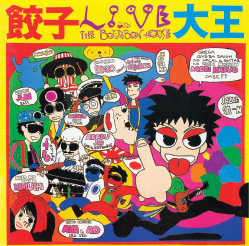
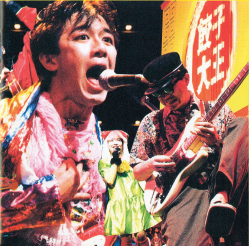
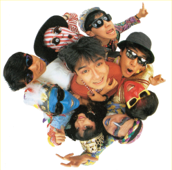

Live at The Bourbon House
UKプロジェクト 第一弾アルバム
インディーズチャート2ヶ月連続1位
01 させて
02 うそつき狸のブンピッピ
03 はだしのゲン
04 えんそく
05 ロボット
06 大きなカブ
07 俺だぜ（クレイジーダンサー）
08 キムチの気持ちはよくわかる
09 きみのことばかり
10 おれはジャイアン
11 おれはゴジラ
12 おれはブタゴリラ
13 ブタの心臓
14 サザエさん
※Live Recording／大阪ザ・バーボンハウス
02 うそつき狸のブンピッピ
03 はだしのゲン
04 えんそく
05 ロボット
06 大きなカブ
07 俺だぜ（クレイジーダンサー）
08 キムチの気持ちはよくわかる
09 きみのことばかり
10 おれはジャイアン
11 おれはゴジラ
12 おれはブタゴリラ
13 ブタの心臓
14 サザエさん
※Live Recording／大阪ザ・バーボンハウス

5.3コーネン大ワンマン
インディーズ初！！大阪厚生年金会館大ホールを満員に！
01 クレーン
02 バイクでブンブンブン
03 ペコペコバッタ
04 MC
05 降水確率0％は全くあてにはならないぜ
06 宗教ベイビー
07 えんそく
08 MC
09 恋をしよう
10 MC
11 なんにもする気がしない病
12 MC
02 バイクでブンブンブン
03 ペコペコバッタ
04 MC
05 降水確率0％は全くあてにはならないぜ
06 宗教ベイビー
07 えんそく
08 MC
09 恋をしよう
10 MC
11 なんにもする気がしない病
12 MC
13 クレイジーダンスレッスン
14 KIMUCHI is Punk Rocker
15 丸坊主
16 MC
17 君のことばかり
18 MC
19 おまえはバカボン
20 MC
21 ニワトリ
22 MC
23 ワッハッハ
※Live Recording／大阪厚生年金会館大ホール

休み時間は何をしよう
初のスタジオレコーディングアルバム
01 ジューサーミキサー
02 わっはっは
03 休み時間はなにをしよう（授業編）
04 雨上がりのニワトリ
05 GEN（はだしのゲン world beat mix）
06 好きになずにいられない
07 ROBOT1991
08 ぼくの歌はキミの歌
09 おサルにかまれて困っちゃう
10 ごめん
11 キミとは連絡がつかないままだ
12 休み時間は何をしよう（放課後編）
13 クレーン
14 おやすみBaby
02 わっはっは
03 休み時間はなにをしよう（授業編）
04 雨上がりのニワトリ
05 GEN（はだしのゲン world beat mix）
06 好きになずにいられない
07 ROBOT1991
08 ぼくの歌はキミの歌
09 おサルにかまれて困っちゃう
10 ごめん
11 キミとは連絡がつかないままだ
12 休み時間は何をしよう（放課後編）
13 クレーン
14 おやすみBaby